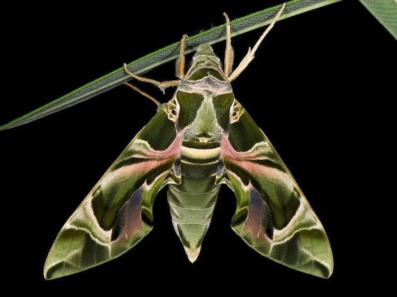

昆虫 · 动物界
夹竹桃天蛾 Daphnis nerii

取食夹竹桃的有毒植物天蛾，成虫翅面有粉绿与褐色花纹，幼虫体侧有眼斑，广泛分布于旧大陆热带地区。
- 分类
- 门节肢动物门纲昆虫纲目鳞翅目科天蛾科属夹竹桃天蛾属
- 栖息环境
- 城市绿地、花园与林缘的夹竹桃等植物附近
- 地理分布
- 非洲、欧洲南部、亚洲热带和亚热带地区
- 保护级别
- 暂无评估
物种志
夹竹桃天蛾翅展约 9–10 cm，体流线型，前翅底色橄榄绿，带有粉红色和褐色交错的花纹，后翅黑褐色带粉绿斑，腹部有黑白环纹；幼虫绿色，体侧有眼状斑和白色纵纹，尾端具角突，翅形狭长，飞行轻快。
它以取食夹竹桃而得名，幼虫取食夹竹桃叶片，能耐受并储存植物中的强心苷，体色随之带有警戒意味。成虫黄昏活动，吸食花蜜，常在花丛间悬停，飞行迅速。夹竹桃天蛾一年发生多代，以蛹在落叶层或土中越冬，广泛分布于非洲、欧洲南部、亚洲热带和亚热带地区，中国南方也能见到。它在城市绿化带中常随夹竹桃种植而出现，是有毒植物与昆虫协同进化的研究材料之一。
形态与习性
- 食性幼虫取食夹竹桃等夹竹桃科植物叶片
- 翅展约 9–10 cm
- 耐毒幼虫能耐受并储存夹竹桃中的强心苷
- 生活史一年发生多代，以蛹在落叶层或土中越冬
- 习性成虫黄昏活动，常在花间悬停吸蜜
- 分布旧大陆热带亚热带，中国南方可见
趣味知识
- 夹竹桃天蛾的幼虫以有毒的夹竹桃为食，自身却不受毒害。
- 成虫翅面的粉绿和褐色花纹，是它最漂亮的识别特征。
- 在城市里种植夹竹桃的绿化带，常能发现夹竹桃天蛾的幼虫。